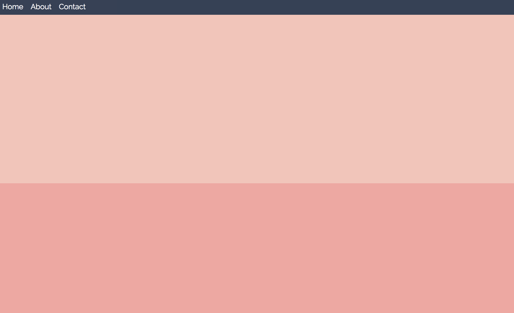
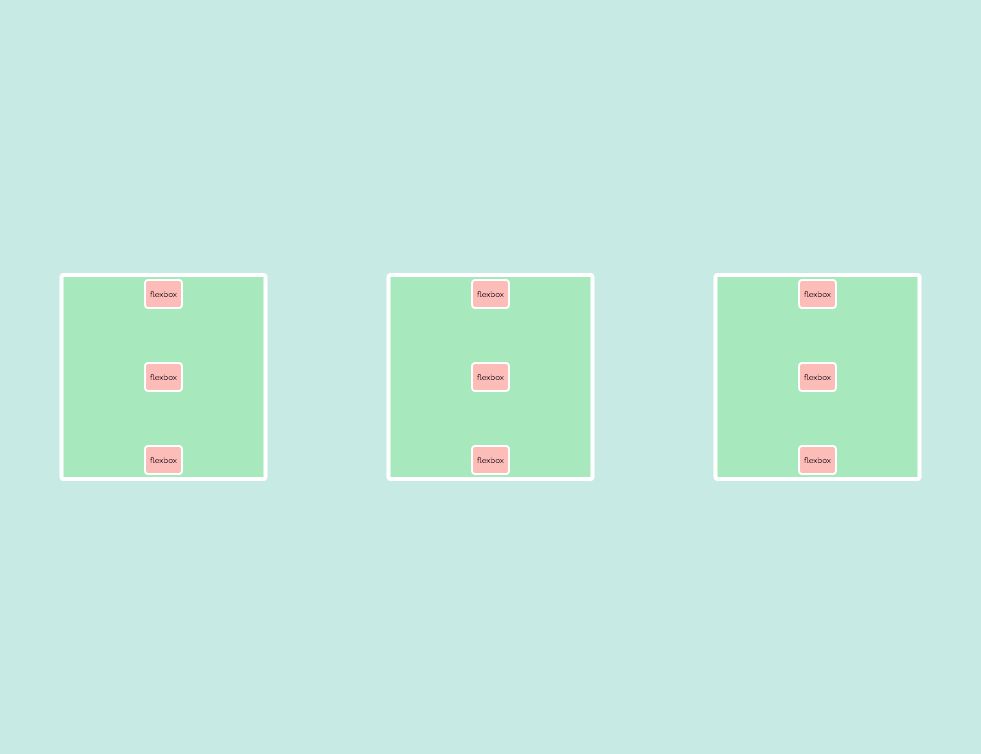

Welcome to the Flexbox lab!
As you go through this lab, think about how using flexbox CSS rules to position elements compares to using
position rules from last week to position and center elements on our page. There's not always
going to be a single correct answer when you move things around on your webpage, but try to get a feel for
which methods feel easier or simpler for certain scenarios, and why flexbox rules may have been added to CSS
years after position rules were in place. What problems does it solve well? Review the slides
from
lecture before starting.
Assignment
You can use the zipped file currently in your lab5 folder or download the assignment file here:
All changes will be made in the style.css file and the appropriate HTML files in the
starter folder. We're going to create two flexbox-based layouts using what we learned about flexbox
in CSS.
As we continue to learn more about CSS, it may help to have a good resource or guide on hand. For this, CSS Tricks is a great option! This article of theirs on flexbox may help to clear up confusion as you work through this lab, but know that you don't necessarily need to know everything that that article will show you. For more help with last week's lab on positioning, this guide to CSS centering is similarly helpful.
Part 1.1: Nav-bar Madness
Your goal for this section is something similar to this:

- Create three new text elements within the navbar in the
q1.htmlfile. - Use flexbox CSS in order to line up the elements in a row in the navbar, like the picture above.
- Improve the UI by adding some style properties to the elements you created, and by adding a pseudo-selector so users can better interact with those elements. You should use the box model properties to create good spacing between and around our elements, like in the picture.
Part 1.2: Flexbox-ception!
Your goal for this section is something similar to this:

- Vertically center the big boxes such that they appear in a row in the middle of the page. (Hint: if you want to use flex properties in order to align the big boxes, on which element should we set the flexbox properties?)
- Use one flexbox property so that there is horizontally equal space-around each of the big boxes.
- Use flexbox properties so that the tiny boxes are still in a column in each big box (they're already in a column, but we want to set them up in a vertical column using flexbox, since we'll be adding other flex properties).
- Use one flexbox property so that there is vertically equal space-between each tiny box, but none above the first box or below the last box in the column.
- Horizontally center the column of tiny boxes in the big boxes, so that the columns of the tiny boxes are in the center of each big box that contains it.
Congrats on completing your first work with flexbox! We hope that you've found its flexible potential to be as refreshing as many do.
Submission
Submit your files to your GitHub Submission Repository by copying all the files inside the "lab5-starter" folder into the lab5 folder of your submission repository (replace the index.html originally in it). In your terminal, from your GitHub Submission Repository, run the following Git commands:
- git add -A
- git commit -m 'finished lab5'
- git push
This assignment is due Tuesday, October 17th at 7:00PM PDT.